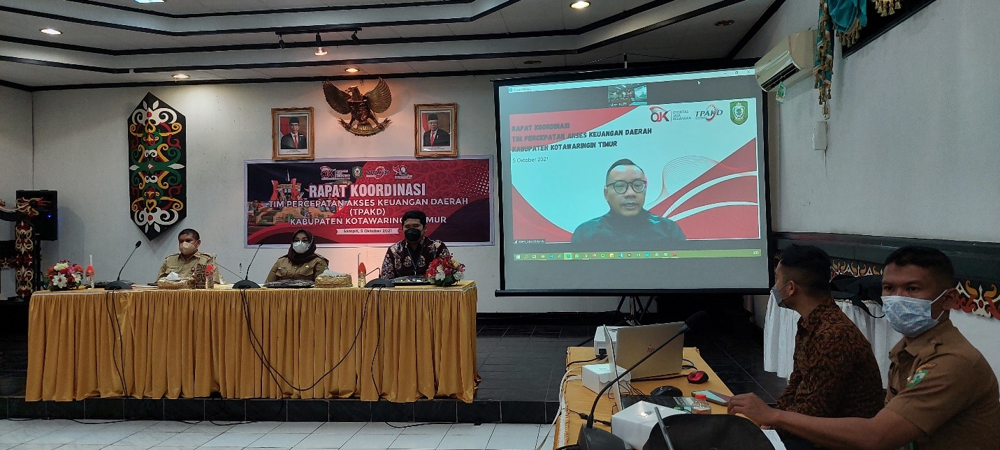

Rapat Koordinasi TPAKD Kabupaten Kotawaringin Timur dan Kabupaten Kotawaringin Barat
Sampit – Pangkalan Bun, 5 - 7 Oktober 2021. Otoritas Jasa Keuangan (OJK) Provinsi Kalimantan Tengah bersama Pemerintah Kabupaten Kotawaringin Timur dan Pemerintah Kabupaten Kotawaringin Barat melaksa . . .